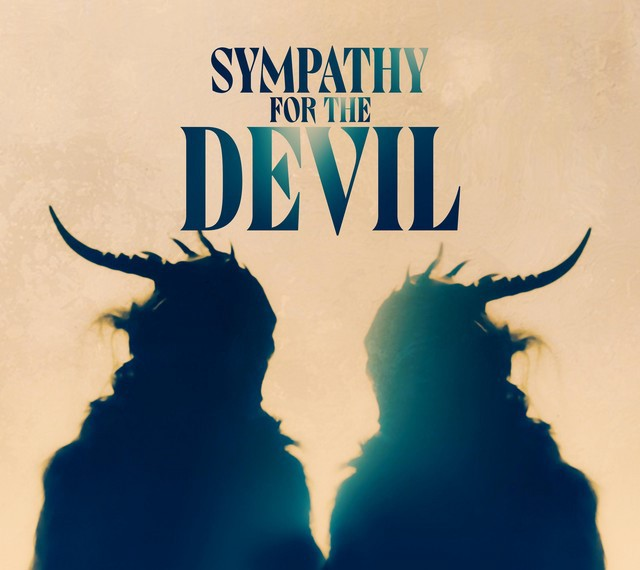

Sympathy for the Devil

Source: Charbel Planet
In the entirety of human history, how many individuals have prayed for the salvation of the being
that arguably needed it the utmost? Satanists certainly will have (perhaps), to an extent — but
it is unclear if, in their hearts, they are praying for him or to him. And yes, there is a
distinction. That distinction is the fine line between Satanists and people genuinely
sympathetic or empathetic towards the Devil’s plight.
To be hated and cursed for the duration of human history by the majority of humans — imagine any
one individual bearing that burden. Imagine any one person witnessing himself — over the course
of millennia — be demonized in every context as the symbol of evil and ruin. Constantly thought
of as the reason for human misery and suffering, but never seen as a being whose story is still
left unwritten. It can be said that the Devil has the longest character arc in the history of
the universe.
What will become of him when the stars in the sky extinguish? Islam teaches its followers that
every person with even an atom’s worth of good in their soul will enter Paradise. But what about
Iblis? The greatest villain in existence? Will he too attain redemption or forever be condemned
to the realm we now associate as his domain?
I imagine the Devil will have an ending to his story that not even he himself could foresee — and
it may go like this:
One day, after the Day of Judgement, there will come another day — a day unlike any before. All
the souls in Heaven will cry out for their brethren in Hell, who will have resided there for
eons at this point. They will look at them and cry to God for mercy. The murdered will weep for
their murderers, the enslaved will mourn for their former-captors, the battered shall find
sympathy for their abusers. One-day forgiveness will overcome all and the damned shall be free
from Hell, having served their sentence. Heaven will pray for Hell and the doors of Paradise
will open themselves. Hell will be empty, save for one soul.
Millennia will pass, and all the inhabitants of Paradise will live in harmony and happiness,
knowing that all souls, no matter how evil or damned, were able to find solace and redemption.
But they will still see a lone figure, stubbornly refusing to leave his own Hell. They will see
him and wonder — what will indeed happen to the Devil? It will be the question on everyone’s
mind. A loose end, the last piece in the puzzle of the universe.
That is when the angels will descend upon Hell to save their brother. They will carry this
battered and blackened angel out of the depths of despair and solitude and bring him to the
gates of Heaven. There his scorched wings and ash-like skin will be illuminated for all to see
as they are healed and washed away, like the sin from his soul. His burnt feathers will
rejuvenate, but unlike those of his brothers, they will remain black — an eternal sign of his
status.
It is at this point, he will ask a question to anyone who can answer, “I cannot enter here. It is
impossible. Someone…who? Who prayed for me?”
The universe will be silent.
Somewhere, God smiles.
Source: F. Scott
Author’s Note: I created this piece many years ago. It is one of my proudest works. I hope you
enjoy it.
— Arsalan Ali Aga
October 2021